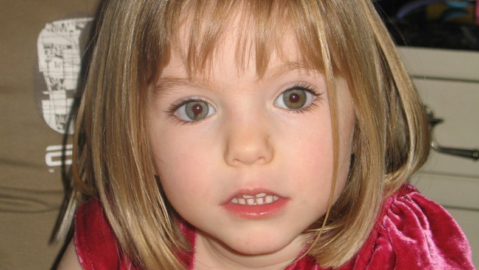
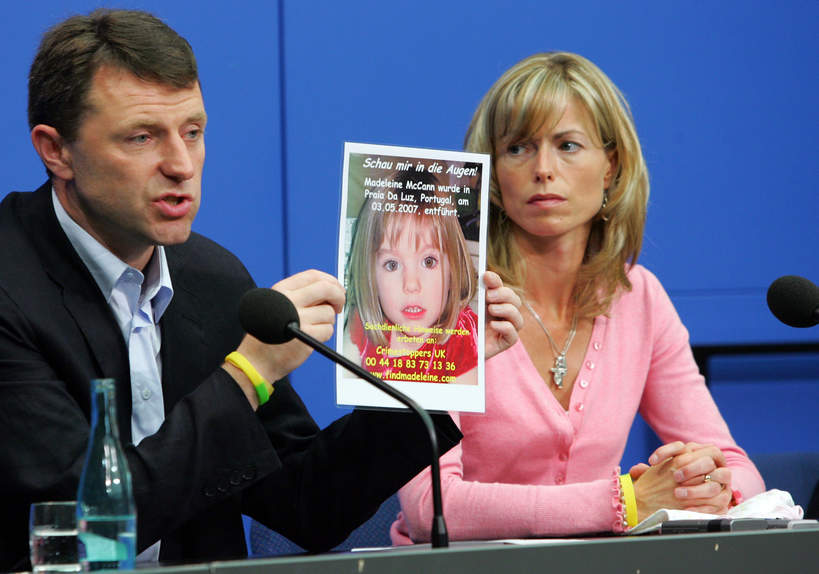

        <div class="container container-flex top-ten mg">
            <main role="main">
                <article class="article-featured">
                    <h2 class="article-title">Sprawa Madeline McCann</h2>
                    <p class="article-body">Madeleine McCann zaginęła dokładnie czternaście lat temu, 3 maja 2007 roku.
                        Od tego czasu wysnuto wiele teorii, co mogło się stać z dziewczynką, i sprawdzono wiele tropów.
                        Niestety, wciąż nie wiadomo, gdzie może przebywać i czy w ogóle żyje. Nowe dowody w sprawie, nad
                        którymi pracuje sztab specjalistów, wskazują jednak na najgorszy scenariusz.</p>
                    
                </article>
                <article class="article-list">
                    <h3>Madeleine McCann okoliczności zaginięcia</h3>
                    <div class="murderer-info">
                        <div class="article-info-img">
                            
                        </div>
                        <p class="article-info-text">
                            3-letnia wtedy Madeleine zniknęła podczas rodzinnych wakacji w kurorcie Praia da Luz w
                            regionie Algarve w Portugalii. 3 maja 2007 roku Kate i Gerry McCann wybrali się na kolację z
                            przyjaciółmi, zostawiając dzieci – córkę i jej o rok młodsze rodzeństwo – w wynajętym pokoju
                            na parterze budynku dla wczasowiczów. Jak zeznali później, regularnie do nich zaglądali, aby
                            sprawdzić, czy wszystko w porządku. <br><br>

                            Około godziny 22, Kate miała ponownie udać się do dzieci. Madeleine już nie było – kobieta
                            zastała puste łóżko i otwarte okno. Zeznała, że wezwała policję po 10 minutach, jednak
                            szczegóły śledztwa ujawniają, że zgłoszenie odebrano pół godziny później.<br><br>

                            Na początku września Kate i Gerry McCann usłyszeli oficjalne zarzuty, kiedy w wynajmowanym
                            przez parę samochodzie odnaleziono płyny ustrojowe i włosy dziewczynki. Według jednej z
                            hipotez, 3-latka mogła umrzeć w wyniku nieszczęśliwego wypadku, a rodzice zatuszowali jej
                            śmierć i upozorowali porwanie. Teoria nie potwierdziła się, ale wiele osób uważa, że
                            małżeństwo jest zamieszane w sprawę zniknięcia Madeleine.
                            Oni twierdzą, że „nie tracą nadziei”. „Musimy wiedzieć, co stało się z naszą ukochaną córką,
                            bez względu na wszystko”, napisali na Facebooku w dniu 14. rocznicy zaginięcia dziecka. „W
                            tym roku powoduje to u nas szczególne wzruszenie, ponieważ za kilka dni powinniśmy świętować
                            18. urodziny Madeleine. Pandemia Covid-19 utrudnia nam ten rok z wielu powodów, ale na
                            szczęście śledztwo w celu odnalezienia Madeleine i ustalenia jej porywacza jest
                            kontynuowane”, przekazali.<br><br>

                            Jak dodali, są „wdzięczni za okazane wsparcie”. „Jesteśmy bardzo wdzięczni policji za jej
                            nieustające wysiłki. Mimo upływu lat, wciąż otrzymujemy wiele pozytywnych słów i życzeń. To
                            wszystko nam bardzo pomaga i za to jesteśmy naprawdę wdzięczni. Dziękujemy”, podkreślili
                            Kate i Gerry McCann.
                        </p>
                    </div>
                    <h3>Zaginięcie Madeleine McCann. Szczegóły śledztwa</h3>
                    <div class="murderer-info">
                        <div class="article-info-img">
                            
                        </div>
                        <p class="article-info-text">
                            Portugalska prokuratura umorzyła śledztwo w 2008 roku, ale w 2011 wznowiła je brytyjska
                            policja. Do 2013 roku sprawdzono 195 możliwych scenariuszy. Żaden z nich nie okazał się
                            prawdziwy.<br>
                            W 2020 roku sprawa ruszyła z miejsca. Policja zatrzymała Christiana B, obywatela Niemiec,
                            który w 2007 roku był na miejscu zdarzenia. 43-latek wyjechał z Portugalii nagle, następnego
                            dnia po zaginięciu Madeleine. Przed tym przerejestrował swoje auto na inną osobę, ale
                            podczas śledztwa ujawniono, że w tym samochodzie znaleziono dziecięce ubrania. Mężczyzna
                            odsiaduje wyrok za jeden z wielu gwałtów, których się dopuścił. Stanowczo zaprzecza, że ma
                            cokolwiek wspólnego ze zniknięciem dziewczynki.<br><br>

                            Niemiecki prokurator Hans Christian Wolters utrzymuje, że zaginiona prawdopodobnie nie żyje.
                            Jak dodał, ma na to dowody, a rodzicom McCann wysłał list, w którym tłumaczy swoją teorię.
                            Nie ujawnił szczegółów, jednak wiadomo, że policja przeszukuje miejsca, w których może być
                            ukryte ciało. Śledztwo trwa.<br><br>

                            Madeleine McCann skończyłaby w tym roku 18 lat.
                        </p>
                    </div>
                </article>
            </main>
        </div>
